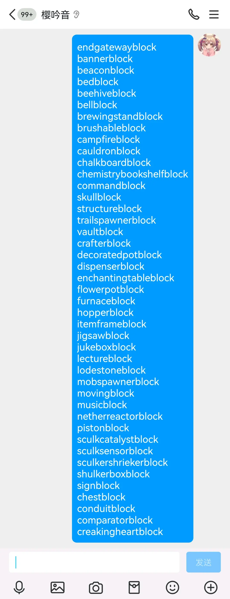
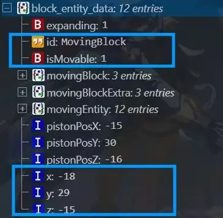

extrablock:被包含的方块
setblock:放置方块
block：方块对象
blockEntity或blockactor: 方块实体
首先要知道在整个游戏的同类方块都指向一个方块对象，
在这种情况下，方块实体有两个作用，
1.方块实体能让某个位置的方块储存独属于自己的数据
2.每gt定期更新一次，执行特定的行为（并不是所有方块实体每gt都执行事件，大部分只是存储数据）
不过要补充说明一下，末地传送门的方块实体没有任何作用
方块实体的数据初始化有两种
1.直接将数据作为参数传入setblock函数中
2.setblock初始化一个默认的方块实体，然后再录入进去
方块实体和方块的关系，
方块实体只能被一类方块创建，这类方块是可以创建方块实体的方块，（方块实体基本上都是在setblock函数被创建的）
方块实体创建时，
是根据坐标储存的，会将坐标录入区块的方块实体表里面（哈希表）
这个过程中，函数会将方块实体要创建的坐标转换为键，根据键搜索表里这个位置是否已经存在值了
如果存在就不创建了
也就是每个位置只能有一个方块实体
而且新的方块实体永远无法顶掉旧的
（方块实体自己和没方块实体的方块都不能影响方块实体的存在
方块实体的创建和删除都依赖于“可以创建方块实体的方块”）

举个例子
比如往mb的方块实体的位置setblock一个活塞，那么因为那个位置已经有了一个方块实体，所以活塞的方块实体就没法被创建出来，而活塞的方块实体负责着活塞的运作
所以会出现活塞无法推出的现象
接下来解释下方块被推为什么内部的方块实体可以跟着走
这是因为方块实体每gt会检测自己位置上的方块，然后把它记录起来
所有的方块实体还会存储一个ismovable标签，这个是来判断方块实体能否被移动的，
当ismovable标签为零时不可以被推动，
这个标签可以说是专门为了活塞设置的（实际上活塞在方块层面是可以被推动的，mc并没有推出的活塞方块）
在活塞未推出时，活塞的方块实体的ismovable标签是1
在活塞推出时，ismovable标签变成0
MB（Moving block）的性质，
MB属于可以创建方块实体（这个方块实体是每gt执行特定行为的）的方块，
MB的方块实体存储的内容有，
1.推动的方块（Moving block标签）
2.推动的额外方块（Moving extra标签）
3.推动的方块实体（Moving entity标签）
4.记录推动它的活塞是否伸出的标签（expanding标签），伸出时为1，不伸出时为0，
如果伸出就调整MB记录的碰撞箱的位置（为1就往推出方向进一格，为0就停在原地）

比如说箱子被推了，那么MB的方块实体就储存了
箱子的方块信息（Moving block）
箱子的包含的方块信息（Moving extra)
一般默认是空气，也可以是别的，这部分看
站内专栏 »箱子的方块实体信息（Moving entity），
而箱子的方块实体负责储存箱子里的内容，被推了之后再转b，就会放出来箱子和之前储存的那个箱子的方块实体，所以打开箱子还是那些内容
其实这个moving entity不区分属于moving block还是moving extra，
这就导致了一个很有意思的现象，
就是如果一个moving extra有方块实体，并且在转b的时候判断为不能成为一个extrablock就会放不出来
但是被推动的方块和extrablock的方块实体却被放出来了，
前面也讲到了一个结论，方块实体自己和无法创建方块实体的方块都不能影响方块实体的存在，
这就做到了方块实体分离
mb的方块实体每gt执行特定行为有：
1.MB的方块实体在每gt更新时，
首先会检测自己记录的movingblock和movingextra是否是不可推动的
如果是就把他们变成空气，
这就意味着，如果你推动任何一个从方块层面上不可被推动的方块，或者说把它记录到MB里，那么当这个MB更新的时候，这个方块就会变成空气，但是这个方块的方块实体却会存储在MB里，放置出来就变成了带有那个方块的方块实体的air
这就做到了方块实体分离
2.MB的方块实体每gt更新时还会检测它记录的活塞位置上是否存在活塞，如果不存在就直接转b
转b先放block再放extrablock
这里是直接setblock传递方块实体数据，不是先创建默认再录入数据
代码分析：奈茶泡芙